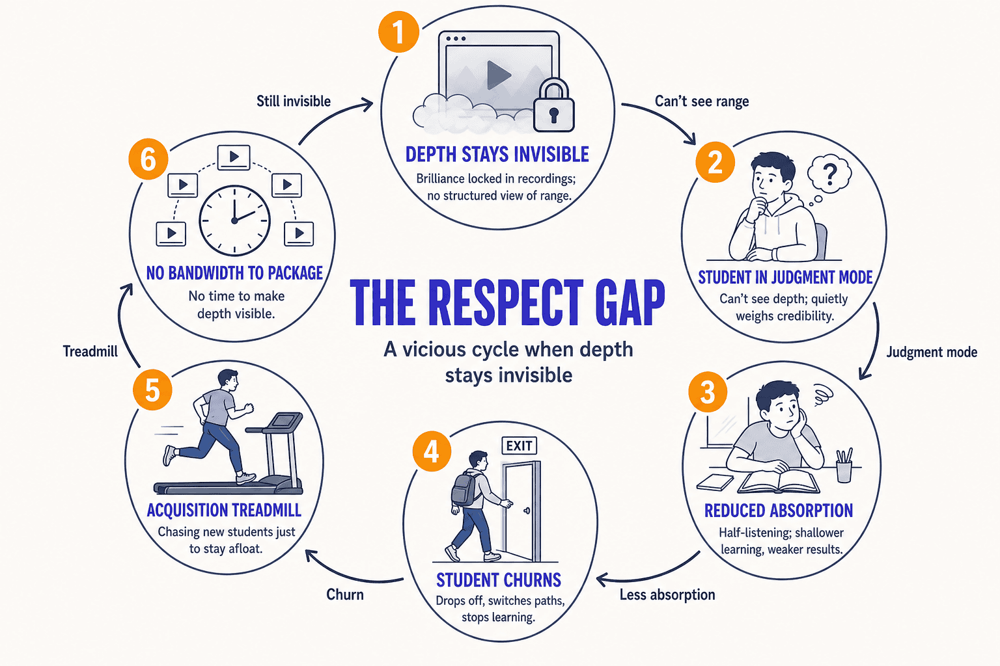
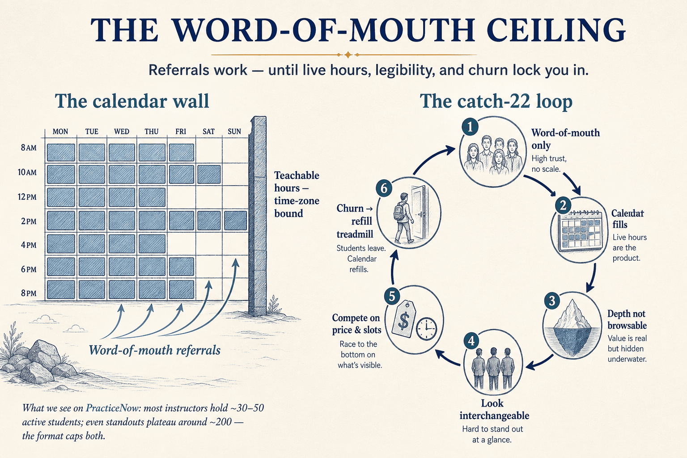
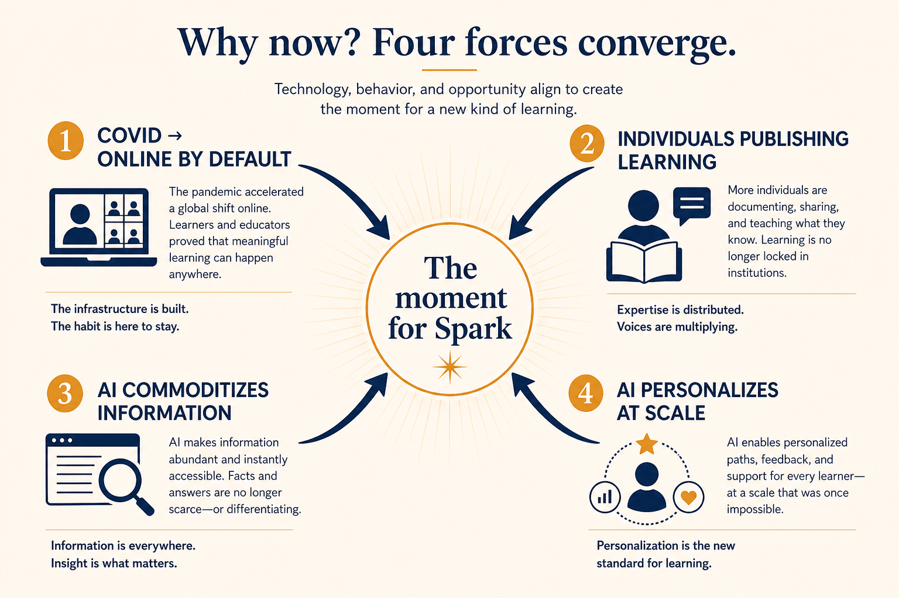
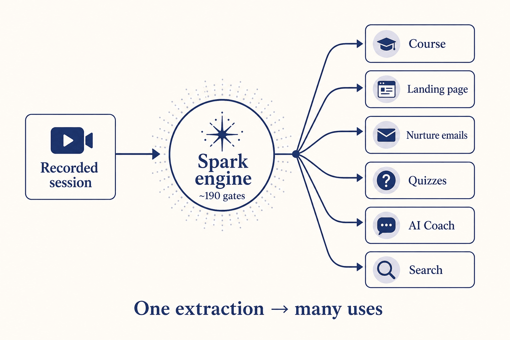
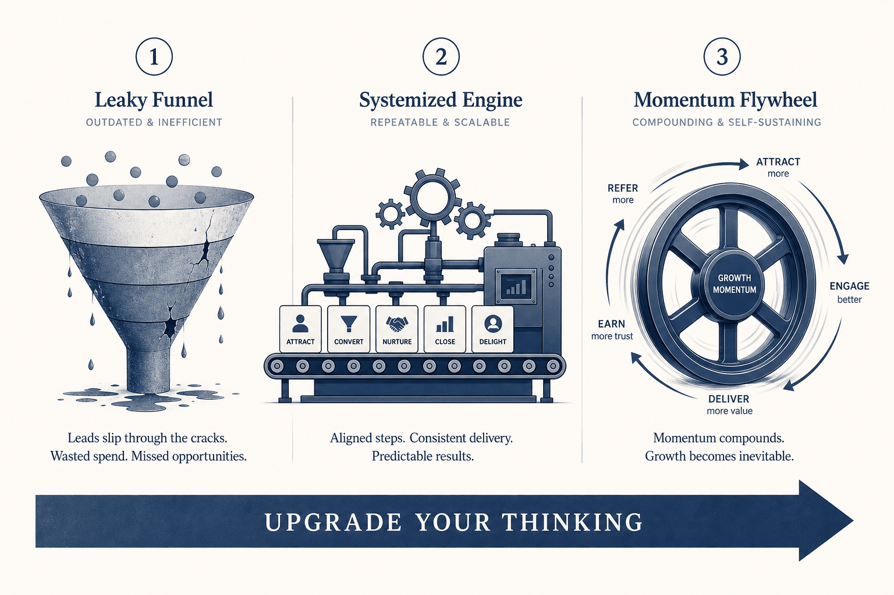
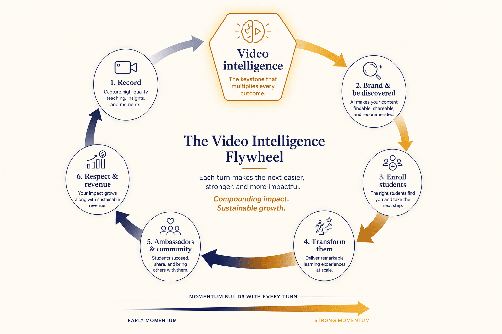
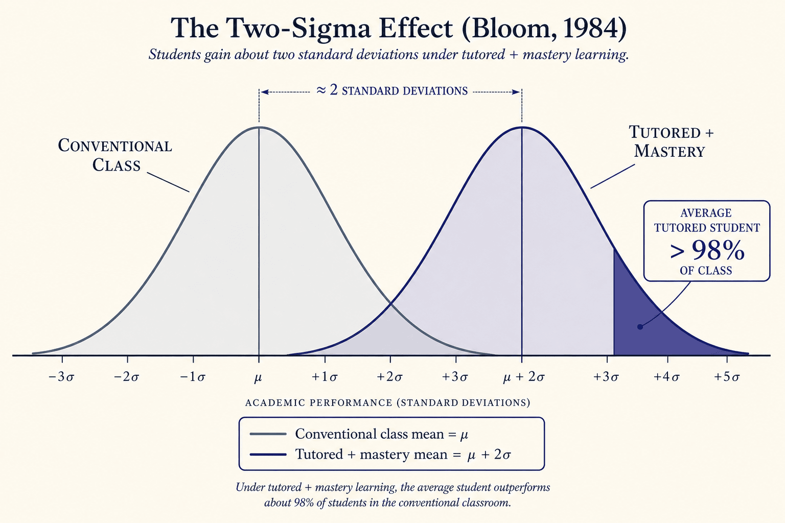
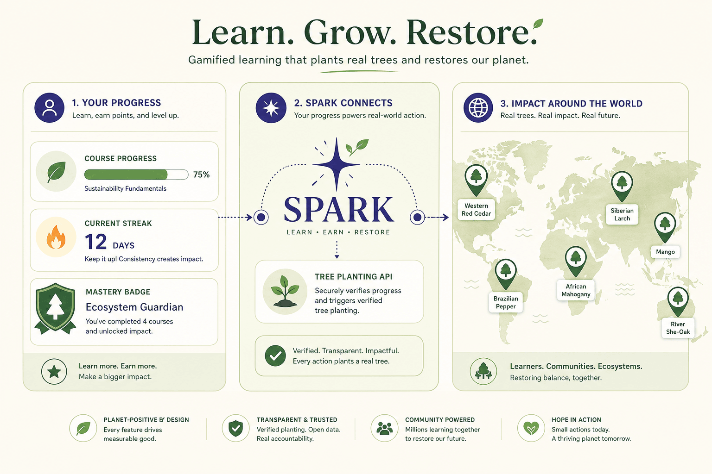
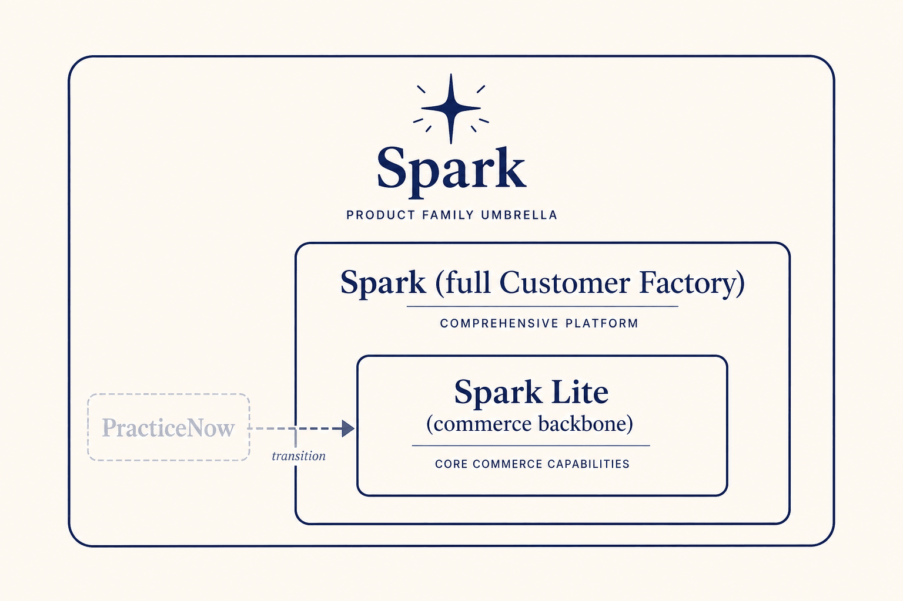

How to read this paper. This is a long document by design — it brings together fifteen years of ideas into one connected argument. The main thread tells the story and the vision; you can read it straight through. The framework call-outs, diagrams, and citations are there if you want to go deeper or check the evidence. Every external factual claim is sourced; anything that is our own opinion or first-party observation is labelled as such. Where a capability is not yet shipped, you'll see a status tag: NOW NEXT HORIZON.
1. A studio, a teacher, and a question I couldn't shake
For the better part of a decade I built a software consultancy and grew it to about twenty-five people. I was proud of the work. I was also quietly wrecking my health to do it. Then my daughter was born, and something rearranged itself inside me. I wanted to be the kind of father she could point to — disciplined, healthy, growing. Before she turned one, I had somehow become a person who showed up to hour-long yoga classes several times a week.
If you'd known me a year earlier, you'd have found that hard to believe. This was a man who found even sitting in Vajrasana genuinely painful. So what changed? My daughter's birth was the trigger that got me through the door. But a trigger gets you started; it doesn't keep you going. What kept me going was something quieter and far more powerful: my chemistry with my teacher.
On the mornings I wanted to skip, I went anyway — not out of willpower, but because I didn't want to let my teacher down. I had developed a deep, almost involuntary respect for her. The courage it took to follow her calling. The years she'd poured into her craft. The way she could read a room of bodies and know exactly who needed a gentler word and who needed a firmer one. The delight on her face when a student finally got something. Respect like that does something strange and wonderful to a student: it makes you coachable. You stop arguing with the teacher in your head and start absorbing.
Over two years, I changed. Not just my body — my self-image. "Huh. You're not that inconsistent, indisciplined guy anymore." I was on cloud nine.
And then I noticed something that has bothered me ever since.
When I spoke about my teacher with the glow of a convert, people were tepid. Friends, family — fine, they hadn't experienced her classes. But the other students at the studio were tepid too. The people who had sat in that room, who had been transformed — why weren't they overflowing with the same respect I felt?
It didn't take long to find the uncomfortable answer.

2. The two traps that keep great teachers small
2a. The Respect Gap
Here is the answer I didn't want to accept: in our society, respect tracks money. [our argument] There are exceptions, but they are rare. My teacher earned far less than most of her students. And until that changed, the way they saw her was unlikely to change.
It gets worse, because respect isn't just about status — it's a learning input. When a student doesn't quite respect a teacher, their mind sits in judgment mode. They question instead of absorb. So a teacher who is undervalued is also, through no fault of their own, a teacher whose students learn less from them. Poorer results lead to frustration, frustration leads to churn, and churn puts the teacher back on the treadmill of constantly finding new students just to make ends meet. It's lose-lose. [our argument]
This is the Respect Gap: the distance between how much a great teacher is worth and how much the world recognizes they're worth. Spark exists to close it.
2b. The Word-of-Mouth Ceiling
The Respect Gap is psychological. Its twin is structural, and just as suffocating.
The overwhelming majority of online live educators have exactly one marketing channel: word of mouth. [our observation] It's a wonderful channel — high trust, zero cost — but it has a hard ceiling. Across the studios we've worked with on PracticeNow, we've watched it again and again: the very best teachers plateau around a couple of hundred regular students, and most hover at thirty to fifty, churning constantly. [first-party observation, Spark / PracticeNow]
This is not bad luck; it's the math of the format. Live and online means time-zone-bound — there are only so many teachable hours that overlap with a teacher's waking day. Because the offering is never productized, it can't scale past the teacher's own clock. And because the teacher's real strengths are locked away inside their videos, they have almost nothing to brand themselves with. So they end up looking like everyone else, which means they can't credibly claim a niche, which means they compete on price and availability — the very things their format makes scarce. A catch-22.
We're not theorizing about the ceiling from the outside. The structure of creator income confirms the shape of it: independent-creator earnings follow a steep power law — researchers analyzing more than 100,000 creators found a power-law exponent of roughly α≈2, closer to the distribution of wealth than of labour income , and Goldman Sachs estimates that about 96% of creators earn on the order of ~$1,000 a year while only ~4% are full professionals . A tiny head; an enormous, under-monetized tail. That tail is full of brilliant teachers.

And here's the cruelty of it: content alone doesn't rescue them. When teaching is shipped as undifferentiated information — a recording, a link, a PDF — people don't finish it. Across hundreds of large online courses, median completion runs in the low double digits and averages have been measured as low as ~6.5% . Information, dumped, doesn't transform anyone. Which is the hinge of this entire paper.
3. Why now — the Great Convergence
Ideas have timing. This one's moment is now, because four forces are converging at once.
One: the world moved its teaching online — permanently. The pandemic produced the largest disruption of education in history; at its April-2020 peak it affected 1.6 billion learners — about 94% of the world's students — across more than 190 countries, alongside over 100 million teachers . The classrooms reopened, but the habit of teaching and learning online did not reverse.
Two: individuals — not just institutions — became publishers of structured learning. On the major course platforms, the share of new, non-university courses jumped sharply in a single year (on Coursera, 31% → 39% of new courses from 2020 to 2021), as structured online learning reached ~220 million learners . More independent educators are recording more teaching than at any point in history — and most of it is gathering digital dust. The money is following: global EdTech and digital-learning spend was projected to reach roughly $404B by 2025, growing at ~16% a year .
Three: AI is making information abundant and nearly free. The economics here are old and well understood: information goods are expensive to produce once and nearly free to reproduce . Generative AI extends that near-zero marginal cost from reproduction to generation itself, with measured productivity gains in knowledge work around ~14% . When information becomes a commodity, its scarcity value collapses — and value migrates somewhere else. (We present "commoditization" as our interpretation of this evidence, not a settled empirical finding.)
Four: AI is making personalization possible at scale. The same technology that commoditizes information can, for the first time, deliver something that used to be the most expensive thing in education — individual attention — to many learners at once (see §11).
The raw material (a decade of recorded teaching) and the tool (AI) have arrived in the same window. That's the convergence. Spark is what you build on top of it.

4. The real product is transformation, not information
If AI can generate competent information on any topic instantly and for almost nothing, then selling information is a losing game. But here's the thing — people never really bought information in the first place. They bought transformation: becoming healthier, more skilled, more confident, more capable. Information was just the raw material we mistook for the product. [our synthesized position; spirit owed to thinkers like Tim Ferriss]
The evidence that information-by-itself fails is everywhere, and we already saw it: when learning is delivered as pure content, almost no one completes it . What actually produces transformation is the layer around the information — a relationship with a teacher you respect, accountability, practice spaced over time, feedback, and a community that carries you when motivation dips.
That layer is exactly what AI cannot commoditize and exactly what the lone educator is best in the world at providing. So the strategy writes itself: let AI handle the information; build an engine that amplifies the transformation. Everything else in this paper is a consequence of that single sentence.

5. Our Golden Circle
Simon Sinek's observation is that the organizations that move people start with why, not what . Here is ours.
- WHY. We believe the people who help us grow deserve to be respected and to prosper for it. We exist to close the Respect Gap — to make great teaching visible, valued, and viable, so that real transformation can happen.
- HOW. By unlocking the intelligence trapped inside teachers' own video — and turning it into a complete system for being discovered, building a brand, nurturing an audience, getting paid, helping students truly learn, and growing a community.
- WHAT. Auto-built courses, auto-built landing pages and branding, auto-nurturing, an AI coach, spaced-repetition practice, commerce, and (on the horizon) discovery and community — one connected platform for the solo educator.

6. The master unlock: video intelligence
Almost everything Spark does flows from one capability, so it's worth dwelling on.
Picture what's sitting on teachers' hard drives and cloud accounts right now: carefully curated online workshops on an almost infinite range of topics, complete with slides and a rich Q&A; multi-day recordings of in-person sessions; webinars; masterclasses. You'd assume these are watched and re-watched, referred to whenever a learner has a question. They're not. Once the live session ends, they vanish behind what I call the Zoom-recording firewall — forgotten gold, almost never opened again.
Why don't teachers just sell the recordings? Because no one buys a video they can't see inside. Why not describe it? Because when did you last read a paragraph and buy a video? That's why we have trailers, chapters, and reviews. So why don't teachers make that marketing material themselves? Because it's a different craft entirely — and for a 90-minute session it can take hours. Teaching live is one skill; packaging the recording is another, and it's simply not most teachers' cup of tea.
Spark is the machine that does it for them. Point it at a recording and it extracts the latent structure — chapters, slides, key concepts, summaries, knowledge checks, searchable transcripts, and semantic embeddings — and turns one raw video into structured, navigable, sellable learning. NOW
The depth here is real, and it's our moat. The pipeline runs through on the order of ~190 audited automation gates, and it compresses what would otherwise take a skilled human roughly 22–31 hours of work per finished hour of video — an effort worth several hundred dollars — into minutes. [first-party; to be reconfirmed against live data before publication] The principle to remember: one extraction, many uses. The same intelligence powers the course, the landing page, the nurture emails, the quizzes, the coach, and the search — across the entire factory described next.

7. Made to Stick: earning respect by making depth visible
Now return to the Respect Gap, because video intelligence is how we close it.
Recall the problem: a teacher's brilliance is locked inside their recordings, invisible to anyone who hasn't already sat in the room. The fix is communication — making that depth stick. Chip and Dan Heath's SUCCESs framework names the qualities that make ideas stick .
Here's the headline application, and it's almost unfairly effective. When you turn a teacher's rambling three-hour recording into a structured course outline — modules, chapters, concepts laid out at a glance — you make their depth concrete and credible in a way words never could. A prospective student who spends five minutes inside that structure has their perception flipped: from "another teacher, I guess" to "oh — this person has real range and depth." Two teachers told us versions of the same thing: "I didn't know I'd covered so many topics until I saw it laid out," and from a learner, "I didn't know there was so much to learn about this until I saw the course." That moment of pleasant surprise — the Unexpected — is the Respect Gap closing in real time.
Made to Stick isn't only a marketing lens; it's a pedagogical one too. The same instinct — make it simple, concrete, story-shaped — runs through how Spark structures the learning itself.

8. Upgrade the mental model: Funnel → Customer Factory → Flywheel
Most educators (and most marketers) think in funnels — pour attention in the top, a few customers trickle out the bottom. It's a useful picture, but it's lossy and one-directional: it treats people as drop-off, ends at the sale, and says nothing about what happens after.
Ash Maurya's reframe is better: think of your business as a Customer Factory — a system that reliably converts strangers into successful, loyal customers, where every stage is a process you can observe and improve, not a leak you tolerate .
And the best businesses go one step further, to a Flywheel — Jim Collins's image of a heavy disc that's hard to turn at first, but where every push compounds, until momentum itself does the work .
This paper asks the reader to make that same upgrade in how they see their own practice: from a leaky funnel, to a factory you can engineer, to a flywheel that compounds.

9. The Customer Factory — Spark's seven parts
Most solo educators are, in Michael Gerber's terms, Technicians suffering an entrepreneurial seizure: brilliant at the craft, accidentally running a business they were never trained to run. The E-Myth's prescription is to work on the business, not just in it — by building a turnkey system .
Spark is that turnkey system for the educator — a business-in-a-box — assembled from seven parts. Each part is powered by the same video intelligence from §6.
- Discovery HORIZON — a marketplace where learners find teachers by niche. This is where the long tail (§14) gets matched to demand; the creator and coaching economies make it viable now .
- Branding NOW NEXT — the teacher's story, expertise, and niche, made visible through auto-generated landing pages and course structure. This is the Respect Gap closer from §7.
- Nurturing NEXT — drip-by-drip relationship-building (email and beyond), composed automatically from the teacher's own content, so nurturing finally sounds like the teacher instead of a template.
- Sales NOW — full transactional support: payments, subscriptions, country-wise pricing — the commerce backbone (Spark Lite, §15).
- Spaced Repetition NEXT — for enrolled learners, scheduled review that moves knowledge into long-term memory (the science is in §12).
- AI Coach NOW NEXT — personalized, one-on-one coaching that turns information into transformation, and brings Bloom's two-sigma effect within reach at scale (§11).
- Community HORIZON — creating and catalyzing a community around each teacher, where accountability lives (§12) and where planet-positive gamification turns individual progress into shared identity (§13).
The parts aren't a menu; they're an assembly line. Each one feeds the next, and the whole thing is fed by video intelligence.

10. The Flywheel — the factory, spinning
Lay the seven parts in a circle and they stop being a line and become a loop. That's the Spark Flywheel for each educator:
More teaching recorded → richer video intelligence → better discovery, branding, and nurturing → more students → more transformed students who become brand-ambassadors and community members → more respect and more revenue for the teacher → which funds and motivates more (and better) teaching. And around again, faster each turn .
The keystone of the wheel is video intelligence — it's what makes every other push easier. The compounding output is the thing we set out to create on page one: respect, community, and a real living for the teacher. This is the structural answer to the Word-of-Mouth Ceiling: word of mouth, engineered into a flywheel, no longer plateaus — every transformed student adds torque.

11. Personalization at scale
For most of history, the highest-quality education — a great tutor working one-on-one — was also the most expensive and least scalable thing in the world. AI changes that, and Spark applies it at two levels.
Teacher-scale personalization NOW. Spark lets a single educator productize their teaching so it reaches far beyond the time-zone-bound hours of live class — without losing their voice, because everything is built from their own material. This is how a teacher breaks the Word-of-Mouth Ceiling.
Student-level personalization NEXT. As we load context about each learner — what they know, where they struggle, their goals and pace — the AI Coach tailors content and guidance to that student, one-on-one, at scale.
Where those two circles overlap is the prize, and it has a name. Benjamin Bloom found that students tutored one-to-one with mastery techniques performed about two standard deviations better than conventionally taught students — the average tutored student outscored 98% of the classroom group . The catch was always cost: you can't give every student a personal tutor. AI is the first technology that makes the economics of one-on-one approachable for everyone.
We're careful to be honest about the magnitude. Bloom's full 2σ combined tutoring with mastery learning, on small samples; later work pegs the effect of human tutoring at around d≈0.79, with intelligent tutoring systems close behind at d≈0.76 — nearly as effective as a human tutor . And a 2025 randomized controlled trial found students learned more than twice as much, in less time, with a purpose-built AI tutor than in an active-learning class . The exact number is debated; the direction is not. Personalized guidance works, and AI can now deliver it at scale.

12. The science of transformation
If Spark's promise is transformation, we owe it rigour about how humans actually learn and remember. The back half of the Customer Factory — spaced repetition, the coach, the quizzes, community — is built on settled learning science. (We've drawn heavily on The Math Academy Way for how to operationalize these.)
The memory model. Information flows from sensory memory into working memory, and only some of it consolidates into long-term memory. The bottleneck is working memory, which is tiny and brief: Miller's famous "seven, plus or minus two" was later revised down to a true capacity of about four chunks when rehearsal is blocked . And what we don't consolidate, we lose: Ebbinghaus's forgetting curve showed retention dropping steeply soon after learning — a result faithfully replicated in the modern era . Forgetting isn't only passive, either; the brain appears to run an active, sleep-linked decay process that prunes memories on purpose .
That single picture — tiny working memory, relentless forgetting — dictates good teaching design. Here's how it maps onto Spark:
- Fight the forgetting curve with spacing. Distributed practice produces dramatically better long-term retention than cramming, and the ideal review interval grows as the retention horizon grows . → Spaced Repetition schedules reviews of a teacher's key concepts. NEXT
- Learn by retrieving, not re-reading. The act of being tested causes learning; the advantage over restudying grows at longer delays . → Quizzes and knowledge checks, generated from the video, aren't assessment bolted on — they're the learning mechanism. NOW
- Interleave. Mixing problem types beats blocked practice on delayed tests, even though it feels harder in the moment . → cross-chapter and cross-course review. NEXT
- Respect cognitive load. Overloading working memory leaves nothing for forming durable schemas . → Spark's instinct toward short (~5-minute) chapters and clean, worked structure. NOW
- Aim for mastery. Bloom's mastery-learning argues most students can master material given the right time and conditions ; a 108-study meta-analysis put the average gain near half a standard deviation, with the largest gains for weaker students . → a progression and (eventually) a per-teacher knowledge graph that lets learners advance as they master, not as the calendar dictates. HORIZON
- Accountability and incentives. Knowledge science isn't enough without motivation — which is what Community (§9.7) and gamification (§13) supply.
Honesty note. Mastery learning on its own typically yields ~0.5–1σ, not the full two sigma; the headline 2σ requires the full stack of tutoring plus mastery. We aim at the ceiling while reporting the floor .




13. Learning that heals the planet — planet-positive gamification
Gamification usually means points and badges — extrinsic confetti. We want to do something better with it.
Spark's gamification ties serious learning milestones — mastery streaks, course completions, consistent retrieval practice — to real trees planted in the real world, through reforestation-as-a-service APIs. Services like DigitalHumani (≈$1/tree, with a developer-friendly API) , Tree-Nation (a public API built for gamified milestones and tree-gifts) , and Ecologi (reported around ~$0.80/tree) make it straightforward to turn a learner's progress into a living forest. Each tree can carry a name, a species, and a GPS location the learner can see and share.
The effect is a quiet inversion of motivation. A learner's private growth becomes visible, planetary good. The reward isn't a dopamine badge that means nothing tomorrow; it's a forest with their name on it. And because trees are shareable and shared, gamification doubles as branding and community fuel — every milestone is a story a student wants to tell. NEXT HORIZON

14. The long tail of expertise
Why is this the right bet for solo educators specifically? Because they are the long tail of education.
Mass institutions serve the head — the popular, standardized subjects. But human curiosity is infinite, and the niches are inexhaustible: a specific style of breathwork, a niche programming framework, regional cuisine, a particular exam, a craft. No university will ever staff these, but somewhere there is a brilliant solo educator who lives for exactly that niche. Spark's Discovery marketplace exists to aggregate that tail — matching infinite niche supply to the niche demand that the internet makes findable.
And the tail is now big enough to matter economically. The creator economy is heading toward roughly half a trillion dollars, with ~67 million creators ; the professional coaching industry alone counts well over 100,000 practitioners and several billion dollars in revenue, growing fast ; and structured online course creation by individuals is climbing every year . The long tail of expertise has finally become a market.

15. The Spark product family
A quick word on names, because clarity matters to customers and co-founders alike.
Spark is the umbrella and the flagship — the AI course engine and the full Customer Factory described in this paper. Spark Lite is the commerce-and-operations backbone — payments, subscriptions, country-wise pricing, the day-to-day running of a teaching business. Many of you have known Spark Lite as PracticeNow, and it is being brought under the Spark name for one simple reason: there should be one product and one experience that carries an educator all the way from content, to course, to getting paid — not two tools bolted together. Spark Lite remains the right entry point for educators who want the transactional backbone first; over time it folds into the larger whole.
That backbone is not a hypothesis. It already processes real money for real teachers around the world — on the order of $5M+ in payments, 5,000+ teachers and students, across 80+ countries. [first-party, as of the latest figures available; to be reconfirmed against live data before publication]

16. Where we are today — an honest ledger
Vision papers earn trust by being clear about what's real. Here's the state of things.
NOW — shipped / in live pilot. The video-intelligence pipeline (~190 gates); automatic course generation; the structured course player; the AI tutor; quizzes and knowledge checks; the Spark Lite commerce backbone; and real teaching content processed in live pilots — on the order of over 2,000 hours. [first-party, as-of; exact figure to be reconfirmed]
NEXT — in build / near-term. Drip nurturing from a teacher's own content; spaced-repetition scheduling; a deeper, more contextual AI Coach; and the first planet-positive gamification.
HORIZON — vision / roadmap. The Discovery marketplace; full community; per-teacher knowledge graphs; and longer-term, AI-avatar teaching experiences.
We're publishing this thesis at the moment the flagship reaches a real version one — which is exactly when a vision should be put on paper, not before.
17. The North Star
Strip everything back and the destination is simple: Spark wants to be the home — the operating system — for the world's solo educators, and through them, a force that closes the Respect Gap at scale.
Imagine reversing the inversion this paper opened with — a world where teaching is among the most respected and best-paid callings, because the people who do it can finally make their depth visible, reach the students who need them, and run a thriving practice without burning out on the acquisition treadmill. That is a ten-to-fifteen-year arc, and the market is large enough to sustain it: a creator economy approaching half a trillion dollars and a coaching profession measured in billions and six figures of practitioners .
The horizon keeps extending — toward AI-avatar teachers and something like a personal, on-demand university for every learner. We hold those loosely, as aspirations. The core conviction we hold tightly: information is becoming free; transformation is becoming priceless; and the people who deliver transformation deserve an engine worthy of their gift.
18. An invitation
This paper began with a teacher whose worth the world couldn't see, and a student who couldn't stop asking why. Everything since has been the answer we've spent fifteen years assembling.
If you're an educator, Spark is being built so your brilliance stops gathering dust behind a recording firewall. If you're on our team, this is the why behind every gate and every screen. If you're an investor or partner, this is the thesis and the size of the prize. And if you're a co-founder reading along — Bala, and everyone who's been here for the long road — this is us, on the same page, at last.
Onward.
References
[1] Strauss, Yang & Mazzucato (2025). "Rich-Get-Richer"? Analyzing Content Creator Earnings (power-law α≈2). UCL IIPP / INET Oxford — inet.ox.ac.uk
[2] Goldman Sachs Research (2023/2025). The Creator Economy Could Approach Half-a-Trillion Dollars by 2027 — goldmansachs.com
[3] Jordan, K. (2014). Initial trends in enrolment and completion of MOOCs. IRRODL 15(1), 133–160 — irrodl.org
[4] UN Secretary-General (2020). Policy Brief: Education during COVID-19 and beyond — unsdg.un.org
[5] Class Central / Dhawal Shah (2021). By the Numbers: MOOCs in 2021 — classcentral.com
[6] HolonIQ. Global EdTech Market to Reach $404B by 2025 — holoniq.com
[7] Shapiro, C. & Varian, H. R. (1998). Information Rules. Harvard Business School Press — en.wikipedia.org
[8] Brynjolfsson, Li & Raymond (2025). Generative AI at Work. Quarterly Journal of Economics, 140(2), 889–942 — doi.org
[9] Sinek, S. (2009). Start With Why — the Golden Circle — simonsinek.com
[10] Heath, C. & Heath, D. (2007). Made to Stick — heathbrothers.com
[11] Maurya, A. Running Lean / Scaling Lean — the Customer Factory model — leanstack.com
[12] Collins, J. (2001). Good to Great — the Flywheel Effect — jimcollins.com
[13] Gerber, M. E. (1995). The E-Myth Revisited — harpercollins.com
[14] Ebbinghaus, H. (1885/1913). Memory: A Contribution to Experimental Psychology — psychclassics.yorku.ca
[15] Cepeda, Pashler, Vul, Wixted & Rohrer (2006). Distributed practice in verbal recall tasks. Psychological Bulletin, 132(3), 354–380 — doi.org
[16] Bloom, B. S. (1984). The 2 Sigma Problem. Educational Researcher, 13(6), 4–16 — doi.org
[17] VanLehn, K. (2011). The Relative Effectiveness of Human Tutoring, Intelligent Tutoring Systems, and Other Tutoring Systems. Educational Psychologist, 46(4), 197–221 — doi.org
[18] Kestin, Miller, Klales, Milbourne & Ponti (2025). AI tutoring outperforms in-class active learning: an RCT. Scientific Reports, 15, 97652 — doi.org
[19] Miller, G. A. (1956). The Magical Number Seven, Plus or Minus Two. Psychological Review, 63(2), 81–97 — doi.org
[20] Cowan, N. (2001). The magical number 4 in short-term memory. Behavioral and Brain Sciences, 24(1), 87–114 — doi.org
[21] Murre & Dros (2015). Replication and Analysis of Ebbinghaus' Forgetting Curve. PLoS ONE, 10(7), e0120644 — doi.org
[22] Hardt, Nader & Nadel (2013). Decay happens: the role of active forgetting in memory. Trends in Cognitive Sciences, 17(3), 111–120 — doi.org
[23] Roediger & Karpicke (2006). Test-Enhanced Learning. Psychological Science, 17(3), 249–255 — doi.org
[24] Rohrer & Taylor (2007). The shuffling of mathematics problems improves learning. Instructional Science, 35, 481–498 — doi.org
[25] Sweller, J. (1988). Cognitive load during problem solving. Cognitive Science, 12(2), 257–285 — doi.org
[26] Bloom, B. S. (1968). Learning for Mastery. Evaluation Comment, UCLA-CSEIP — eric.ed.gov
[27] Kulik, Kulik & Bangert-Drowns (1990). Effectiveness of Mastery Learning Programs: A Meta-Analysis. Review of Educational Research, 60(2), 265–299 — doi.org
[28] DigitalHumani — Plant a tree API (≈$1/tree; Ruby SDK) — digitalhumani.com
[29] Tree-Nation — Public API for gamified tree-planting milestones and Tree-Gifts — tree-nation.com
[30] Tree Planting Providers Compared (Ecologi REST API, reported ~$0.80/tree) — forestmatters.com
[31] Anderson, C. (2004/2006). The Long Tail — wired.com
[32] ICF (2023/2025). Global Coaching Study, fieldwork by PwC — coachingfederation.org